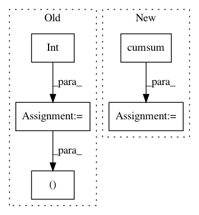

c6607119c25d0178245243ef3fdd3d176dd0d8f2,trackpy/linking/utils.py,,coords_from_df,#Any#Any#Any#,36
Before Change
// get the first frame to learn first frame number
cur_frame, frame = next(grouped)
cur_frame = int(cur_frame)
yield cur_frame, frame[pos_columns].values
cur_frame += 1
for frame_no, frame in grouped:
frame_no = int(frame_no)
After Change
pos = pos[idxs]
unique_times, time_counts = np.unique(times, return_counts=True)
pos_by_frame = np.split(pos, np.cumsum(time_counts)[:-1])
idx = 0
for time in range(unique_times[0], unique_times[-1] + 1):
if time == unique_times[idx]:
In pattern: SUPERPATTERN
Frequency: 3
Non-data size: 5
Instances
Project Name: soft-matter/trackpy
Commit Name: c6607119c25d0178245243ef3fdd3d176dd0d8f2
Time: 2020-01-22
Author: anntzer.lee@gmail.com
File Name: trackpy/linking/utils.py
Class Name:
Method Name: coords_from_df
Project Name: neurodsp-tools/neurodsp
Commit Name: f61f339dbc1782f7c5cd6cee6e3a5cd4758622bb
Time: 2019-10-09
Author: tdonoghue@ucsd.edu
File Name: neurodsp/aperiodic/dfa.py
Class Name:
Method Name: compute_rescaled_range
Project Name: neurodsp-tools/neurodsp
Commit Name: f61f339dbc1782f7c5cd6cee6e3a5cd4758622bb
Time: 2019-10-09
Author: tdonoghue@ucsd.edu
File Name: neurodsp/aperiodic/dfa.py
Class Name:
Method Name: compute_detrended_fluctuation